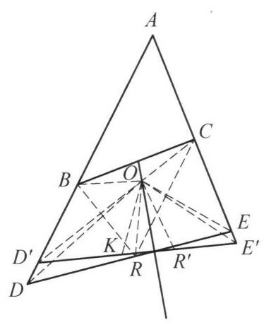

78 例 3：割线定理与圆内接四边形导角
78.1 题目
设直线 l 与 \triangle {ABC} 的边 {AB},{AC} 的延长线交于点 D, E . 直线 l 关于 {BC} 的垂直平分线的对称直线 {l}^{\prime } 交 {AB},{AC} 的延长线于 {D}^{\prime },{E}^{\prime } . 若 {BD} + {CE} = \; {DE} . 证明: B{D}^{\prime } + C{E}^{\prime } = {D}^{\prime }{E}^{\prime } .

图 5-7
78.2 参考解答
如图 5-7,在 {DE} 上取点 R ,使得 {BD} = {DR} , 则由题设条件得 {CE} = {ER} . 设 \triangle {RBC} 的外心为 O ,则 {OD},{OE} 分别垂直平分 {BR},{CR} ,即 O 是 \triangle {ADE} 的内心.
由于
\angle A + \angle {BOC} = \angle A + 2\angle {BRC}
= \angle A + {360}^{ \circ } - 2\angle {BRD} - 2\angle {CRE}
= \angle A + \angle {ADE} + \angle {AED}
= {180}^{ \circ }\text{ . }
因此, A, B, O, C 四点共圆.
设 R 关于 {BC} 的垂直平分线的对称点为 {R}^{\prime } ,则 {R}^{\prime } 在 {l}^{\prime } 上,因为 \angle O{R}^{\prime }{D}^{\prime } = \; \angle {ORE} = {180}^{ \circ } - \angle {OB}{D}^{\prime } ,所以, O, B,{D}^{\prime },{R}^{\prime } 四点共圆,又 {OB} = {OR} = O{R}^{\prime } ,故 O{D}^{\prime } 平分 \angle A{D}^{\prime }{E}^{\prime } ,同理 O{E}^{\prime } 平分 \angle A{E}^{\prime }{D}^{\prime } ,即 O 是 \triangle A{D}^{\prime }{E}^{\prime } 的内心.
在 {D}^{\prime }{E}^{\prime } 上取点 K ,使得 K{D}^{\prime } = B{D}^{\prime } ,则 \triangle {OB}{D}^{\prime } \cong \triangle {OK}{D}^{\prime } ,于是 \angle {BO}{D}^{\prime } = \; \angle {KO}{D}^{\prime } . 因为 \angle {D}^{\prime }O{E}^{\prime } = \frac{1}{2}\angle A + {90}^{ \circ } 及 \angle {BOC} = {180}^{ \circ } - \angle A ,所以 \angle {BO}{D}^{\prime } + \; \angle {CO}{E}^{\prime } = {90}^{ \circ } + \frac{1}{2}\angle A ,故 \angle {CO}{E}^{\prime } = \angle {KO}{E}^{\prime } ,所以 \triangle {OC}{E}^{\prime } \cong \triangle {OK}{E}^{\prime } ,则 C{E}^{\prime } = \; K{E}^{\prime } ,结合 K{D}^{\prime } = B{D}^{\prime } ,知 B{D}^{\prime } + C{E}^{\prime } = {D}^{\prime }{E}^{\prime } . 原问题得证.
注: 通过截长补短处理条件,利用 \triangle {ADE} 与 \triangle A{D}^{\prime }{E}^{\prime } 重合的内心 O 构建两个三角形性质的关联.
78.3 解题思路与分析
这份证明之所以让人觉得“费解”、像变魔术一样，是因为教材采用了数学竞赛书常见的“擦掉脚手架”式写法——它只保留了逻辑上最简短的推导链条，却隐藏了背后的几何直观；更雪上加霜的是，书上的配图（图 5-7）画错了一个极其关键的几何位置关系，直接掩盖了整道题的核心抓手。
为了帮你彻底看透这道题，我们先揭开被隐藏的两个“机关”，然后再一步步还原作者是怎么顺藤摸瓜想出这个证明的。
78.4 一、 破除迷雾：看懂这个证明的两个“隐藏机关”
78.4.1 1. 结构机关：这是一个“过桥式”（正推 + 对称 + 逆推）证明
题目给了一个关于直线 l 的条件（BD+CE=DE），让你证对称直线 l' 也有同样的性质（BD'+CE'=D'E'）。 直接把 BD+CE=DE 对称过去是没法用的，因为 AB, AC 关于 BC 的垂直平分线并不对称。因此，解题者的核心策略是寻找一个在对称变换下保持不变的“桥梁”（不变量）。整篇证明的真实骨架其实是这样的：
\text{已知条件 } (BD+CE=DE) \xrightarrow{\text{第一步：正推}} \mathbf{核心中介（点\,O\,的性质）} \xrightarrow{\text{第二步：对称传递}} \mathbf{O\,对\,l'\,有相同性质} \xrightarrow{\text{第三步：逆推}} \text{结论 } (BD'+CE'=D'E')
你会发现，证明的最后一段（取点 K）其实就是第一段（取点 R）的逆过程！
78.4.2 2. 配图机关：图 5-7 画偏了对称轴，O 其实就在对称轴上！
请仔细看证明的第一段：作者设 O 是 \triangle RBC 的外心。既然是外心，必然有 OB = OC。 到 B, C 两点距离相等的点在哪里？必然在 BC 的垂直平分线上！
然而，在图 5-7 中，绘图的老师把 BC 的垂直平分线（那条穿过 BC 中点的竖直实线）画在了点 O 的左侧，没有穿过点 O！这个画图失误极具误导性： * 真实情况是： 对称轴（BC 的垂直平分线）死死地穿过点 O。 * 这意味着：在做关于 BC 垂直平分线的对称变换时，点 O 的对称点就是它自己（O 是不动点），B 和 C 互相对称！
看清这一点，证明中间那段关于 R' 的复杂倒角瞬间就不再神秘了。
78.5 二、 顺藤摸瓜：还原作者每一步的真实思考过程
现在我们代入解题者的视角，看看从拿到题目到写出证明，脑子里是怎么一步步触发这些辅助线的：
78.5.1 第一步：看到“BD + CE = DE”，条件反射用“截长补短”
在几何题中，遇到“两条线段之和等于第三条线段”（BD + CE = DE），最自然的条件反射就是在长线段 DE 上切一刀（取点 R），让 DR = BD，剩下的 ER 自然就等于 CE。
这一刀切下去，立刻白送了两个等腰三角形：\triangle BDR 和 \triangle CER。
78.5.2 第二步：利用等腰三角形“三线合一”，挖出点 O 的“双重身份”
有了等腰三角形 \triangle BDR（BD=DR）和 \triangle CER（CE=ER），怎么把它们联系起来？ 在等腰三角形中，底边的垂直平分线和顶角的角平分线是同一条线（三线合一）！ 于是解题者作出 \angle BDR（即 \angle ADE）的角平分线和 \angle CER（即 \angle AED）的角平分线，设它们交于点 O。此时奇妙的事情发生了——点 O 同时拥有双重身份：
- 从角平分线看： OD, OE 平分 \triangle ADE 的两个内角 \implies O 是 \triangle ADE 的内心（所以 AO 也平分 \angle BAC）。
- 从垂直平分线看： OD, OE 垂直平分 BR, CR \implies O 是 \triangle RBC 的外心（所以 OB = OC = OR）。
💡 破题的关键顿悟： 既然 O 是 \triangle ADE 的内心，它就在 \angle BAC 的平分线上；既然 OB = OC，它又在 BC 的垂直平分线上！ 这两条线都只由 \triangle ABC 决定，跟直线 l 在哪儿毫无关系！也就是说，不管直线 l 怎么满足条件，造出来的点 O 其实是一个固定不变的点！
78.5.3 第三步：为什么要算 \angle A + \angle BOC = 180^\circ？
既然发现了点 O 其实是 \triangle ABC 里的一个定点，我们就需要搞清楚点 O 和 \triangle ABC 的角度关系，留着后面逆推时用。 熟悉几何竞赛的同学一眼就能看出：“\angle A 的平分线”与“BC 的垂直平分线”的交点，必然落在 \triangle ABC 的外接圆上（即 A, B, O, C 四点共圆，\angle A + \angle BOC = 180^\circ）。 书上的证明为了不直接引用这个定理，顺手利用刚才的外心性质（圆心角 \angle BOC = 2\angle BRC）和等腰三角形底角做了一个简单的角度代换，算出了 \angle A + \angle BOC = 180^\circ。
78.5.4 第四步：过桥——利用对称性证明 O 也是 \triangle AD'E' 的内心
现在要把性质从直线 l 传递到对称直线 l' 上。 记住我们在第一部分揭开的秘密：点 O 就在对称轴（BC 的垂直平分线）上！ 所以沿着 BC 的垂直平分线折叠过去： * 点 O 不动（O \leftrightarrow O）； * 点 B 和点 C 互换（B \leftrightarrow C）； * 直线 l 变成直线 l'（l \leftrightarrow l'）； * l 上的点 R 变成 l' 上的对称点 R'（R \leftrightarrow R'）。
因为在折叠前，\triangle OEC \cong \triangle OER，所以 \angle ORE = \angle OCE； 折叠后，\angle OR'D' 就是 \angle ORE 对称过去的角，而 \angle OBD' 与 \angle OCE 互补（因为 A,B,O,C 四点共圆，\angle OBC 等角关系导出 \angle OBD' + \angle OCE = 180^\circ），从而书上写出了 \angle OR'D' = \angle ORE = 180^\circ - \angle OBD'，证明了 O, B, D', R' 四点共圆。 再由弦相等（OB = OR'）推出圆周角相等（OD' 平分 \angle AD'E'），同理 OE' 平分 \angle AE'D'，成功证明 O 也是 \triangle AD'E' 的内心！
(注：这一步其实有极其简单的看法，见文末第三部分。)
78.5.5 第五步：过河拆桥的逆推——从“O 是内心”证回“BD'+CE'=D'E'”
现在我们已经知道 O 是 \triangle AD'E' 的内心，且满足 OB = OC 和 \angle BOC = 180^\circ - \angle A。怎么证 BD' + CE' = D'E'？ 完全模仿第一步！我们在 D'E' 上截取 D'K = D'B，连接 OK。 1. 因为 OD' 是角平分线，由 \text{SAS} 立刻得到 \triangle OBD' \cong \triangle OKD'，从而 OB = OK，且 \angle BOD' = \angle KOD'。 2. 接下来只要能证明 \triangle OCE' \cong \triangle OKE'，就能得出 CE' = KE'，大功告成！ 3. 对比 \triangle OCE' 和 \triangle OKE'：我们已经有了 OC = OB = OK（一对边相等），OE' = OE'（公共边），只差夹角 \angle COE' = \angle KOE'！ 4. 怎么算这个夹角？围绕点 O 一周的周角是 360^\circ（看图 5-7 中点 O 周围的四个角）： \angle BOD' + \angle COE' = 360^\circ - \angle BOC - \angle D'OE' 代入已知的 \angle BOC = 180^\circ - \angle A 和三角形内心经典公式 \angle D'OE' = 90^\circ + \frac{1}{2}\angle A： \angle BOD' + \angle COE' = 360^\circ - (180^\circ - \angle A) - \left(90^\circ + \frac{1}{2}\angle A\right) = 90^\circ + \frac{1}{2}\angle A = \angle D'OE' 而 \angle D'OE' 正好被 OK 分成 \angle KOD' + \angle KOE'！ 既然 \angle BOD' + \angle COE' = \angle KOD' + \angle KOE'，两边消去相等的 \angle BOD' 和 \angle KOD'，立刻得到 \angle COE' = \angle KOE'！
至此，\triangle OCE' \cong \triangle OKE'（\text{SAS}）得证，CE' = KE'，从而 BD' + CE' = D'K + KE' = D'E'。
78.6 三、 降维打击：站在更高视角看本质（为什么不用 R' 也能秒证）
如果你理解了上面说的“点 O 在对称轴（BC 垂直平分线）上”，你会发现书上证明中间那段引入对称点 R'、证四点共圆的过程其实绕了远路，完全可以用“距离对称”一眼看穿：
- 在证明前半段，我们已经知道 O 是 \triangle ADE 的内心，且 OB = OC。
- 既然 O 是 \triangle ADE 的内心，说明点 O 到三边 AB, AC, DE（即直线 l）的距离都相等（设这个距离为内切圆半径 r）。
- 既然 OB = OC，说明点 O 在 BC 的垂直平分线上。
- 现在把直线 l 沿着 BC 的垂直平分线对称翻折得到 l'。因为点 O 就在对称轴上（翻折后原地不动），所以点 O 到对称直线 l' 的距离，必然等于点 O 到原直线 l 的距离 r！
- 于是，点 O 到 AB, AC, D'E'（即直线 l'）三边的距离也全都等于 r！这直接说明点 O 也是 \triangle AD'E' 的内心（两个三角形共用同一个内切圆）！
用这个视角来看，这道题的几何本质其实非常优美：条件 BD+CE=DE 等价于直线 l 与一个以定点 O 为圆心的定圆相切；由于圆心 O 恰好在对称轴上，直线 l 对称变成 l' 后依然与该定圆相切，因此逆推必然同样满足 BD'+CE'=D'E'。
这样拆解之后，是不是觉得原本生硬的辅助线变得顺理成章了？如果对其中某一步的角平分线或全等细节还有疑问，我们可以随时针对那一步继续展开。
78.7 分步证明
78.7.1 步骤 0：题设条件与几何构型
在 △ABC 中，延长边 AB 至 D、延长边 AC 至 E 得到截线 l(DE)。 直线 l 关于 BC 垂直平分线的轴对称直线为 l’，分别交 AB, AC 延长线于 D’, E’。 已知条件：BD + CE = DE。 求证目标：BD’ + CE’ = D’E’。
78.7.2 步骤 1：① 截长构造点 R 与内心 O
在 DE 上取点 R，使得 DR = BD。由已知 BD + CE = DE = DR + ER，立得 ER = CE。 设 △RBC 的外心为 O（即 OB = OR = OC）。 在等腰 △DBR 中，D 与 O 均在线段 BR 的垂直平分线上，故直线 OD ⊥ BR 且平分顶角 ∠ADE； 同理在等腰 △CER 中，OE ⊥ CR 且平分顶角 ∠AED。 两条内角平分线交于 O，因此 O 是 △ADE 的内心！
78.7.3 步骤 2：② 角度推导与四点共圆
由于 O 为 △RBC 的外心，圆心角 ∠BOC = 2∠BRC。 在平角 R 处：∠BRC = 180° - ∠BRD - ∠CRE。 在等腰 △DBR 与 △CER 中，两底角满足： 2∠BRD = 180° - ∠ADE, 2∠CRE = 180° - ∠AED。 从而 2∠BRC = ∠ADE + ∠AED。 代入三角形内角和得：∠A + ∠BOC = ∠A + ∠ADE + ∠AED = 180°！ 对角互补，故 A, B, O, C 四点共圆！ 又因 OB = OC，O 恰好落在 BC 的垂直平分线上。
78.7.4 步骤 3：③ 轴反射对称与 △AD’E’ 的内心
以 BC 的垂直平分线为对称轴作轴反射。 因 OB = OC，O 位于对称轴上，故对称点为其自身！ 直线 l 对称至 l’，点 R 对称至 R’ ∈ l’，因此 OR’ = OR = OB = OC。 由对称性与共圆角关系，∠OR’D’ = ∠ORE = 180° - ∠OBD’，故 O, B, D’, R’ 四点共圆。 结合 OB = OR = OR’，可知直线 OD’ 平分 ∠AD’E’，同理 OE’ 平分 ∠AE’D’。 即 O 亦为 △AD’E’ 的内心！
78.7.5 步骤 4：④ 截长构造点 K 与 △OBD’ ≅ △OKD’
在 D’E’ 上截取点 K，使得 KD’ = BD’。 考虑 △OBD’ 与 △OKD’： ① D’B = D’K（截长构造）； ② ∠BD’O = ∠KD’O（OD’ 为内角平分线）； ③ OD’ = OD’（公共边）。 由边角边（SAS）判定：△OBD’ ≅ △OKD’！ 由此得对应边 OK = OB = OC，且对应角 ∠BOD’ = ∠KOD’。
78.7.6 步骤 5：⑤ 导角计算与 △OCE’ ≅ △OKE’
在 △AD’E’ 中，O 为内心，故 ∠D’OE’ = 90° + ½∠A。 由 A, B, O, C 共圆，有 ∠BOC = 180° - ∠A。 由此得两翼角之和：∠BOD’ + ∠COE’ = 360° - ∠BOC - ∠D’OE’ = 90° + ½∠A。 结合上一式 ∠BOD’ = ∠KOD’，代入得： ∠KOD’ + ∠COE’ = ∠D’OE’ = ∠KOD’ + ∠KOE’，两边消去 ∠KOD’，即得： ∠COE’ = ∠KOE’！ 在 △OCE’ 与 △OKE’ 中：OC = OK，OE’ 为公共边，夹角 ∠COE’ = ∠KOE’。 由 SAS 判定：△OCE’ ≅ △OKE’！
78.7.7 步骤 6：⑥ 对应边相等，原命题得证
由 △OCE’ ≅ △OKE’ 全等，立得对应边相等： CE’ = KE’。 结合步骤 ④ 截长构造的 BD’ = KD’，将两段相加： D’E’ = KD’ + KE’ = BD’ + CE’ 即 BD’ + CE’ = D’E’。 原命题完全得证！